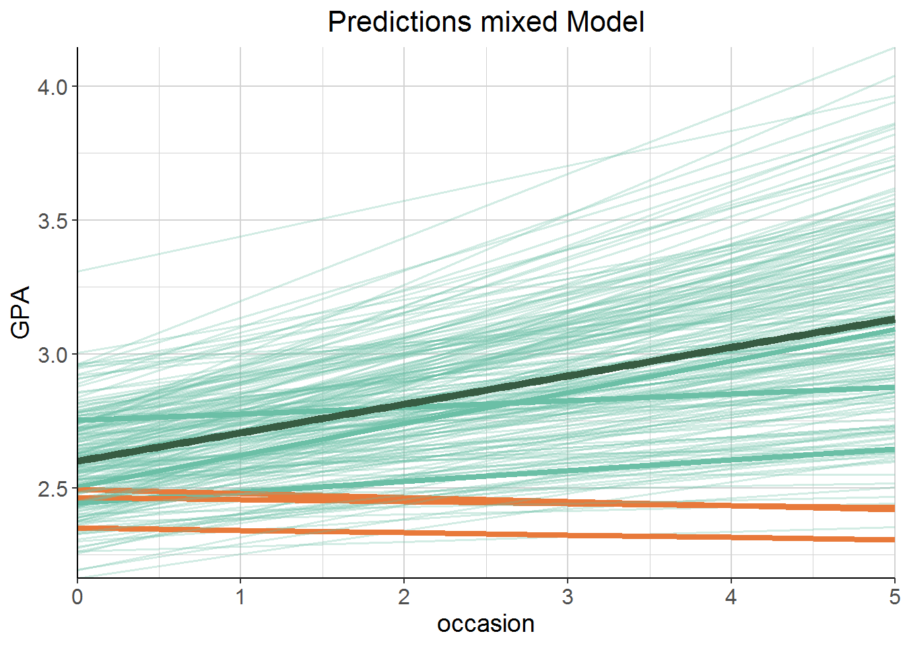

4.1 Mixed Models vs. einzelne Regressionen
Mixed Models und Regressionen pro Cluster oder über die gesamte Stichprobe hinweg unterscheiden sich hinsichtlich der Informationen, die sie berücksichtigen. Das standard Regressionsmodell ignoriert Cluster völlig, poolt also alle Daten (Complete pooling). Gar kein pooling hat man bei der Herangehensweise mit den einzelnen Regressionen pro Student bzw. einer Regression mit Interaktionsterm; die overall Effekte bleiben unberücksichtigt. Was bei mixed Models passiert ist partial pooling, weil die Unterschiede zwischen den Clustern berücksichtigt werden, aber auch die Ähnlichkeit zwischen den Clustern geschätzt wird. Dabei informieren die gepoolten Daten über alle Observations hinweg die Schätzung der Cluster.
4.1.1 Regularisierende Effekte
Der Vergleich mit einer einzelnen Regression pro Student liegt nahe. Dieser Code führt separate Regressionen pro Student durch. Aus der Beschreibung von lmList, scheinbar eine ziemlich lustige Funktion: “Fit a list of lm or glm objects with a common model for different subgroups of the data.”
gpa_lm_by_group <- lmList(gpa ~ occasion | student, gpa)Dabei ist die Regression pro Gruppe genau dasselbe wie eine lineare Regression mit Interaktionsterm. Ein bisschen hässlich in den Densityplots, aber die Regression mit Interaktion und die pro Gruppe überlappen exakt.
lm_regr <- lm(gpa ~ occasion*student, data = gpa)

Auch in den zusätzlichen Plots basierend auf Simulationen, die Clark bastelt, wird die Hauptmessage deutlich:
Mixed Models regularisieren, d.h.: - Intercepts und Slopes von mixed Models und tummeln sich stärker um den overall Effect. - Im Vergleich zu einer Regression pro Cluster/mit Interaktion besteht weniger Unsicherheit über Intercept und Slope. - Mixed Models verhindern Overfitting. Das würde nämlich passieren, wenn man nur den Effekt innerhalb der Cluster betrachtet, ohne den overall Effect zu berücksichtigen.
Je stärker der Effekt der Subgruppen, desto größer die Unsicherheit über den overall Effect.
Mixed Models regularisieren weniger (liegen also weiter weg vom overall Effect und drücken mehr Unsicherheit aus), wenn … - … es mehr Information pro Cluster gibt. - mehr Beobachtungen pro Cluster - mehr Varianz in den random Effects (d.h. den Effekten pro Cluster)
Mixed Models wirken auch dann regularisierend, wenn die Daten unbalanciert sind. Das Beispiel war hier: Mehr Messzeitpunkte pro Student, aber es gibt Dropout über die Zeit hinweg. Die Datenmenge ist also etwa dieselbe, aber zu späteren Messzeitpunkten sind weniger Daten vorhanden als zu früheren. Auch hier liegt das mixed Model näher am overall Effect als die Regression pro Gruppe/mit Interaktion.
4.1.2 Predictions
Spannend wird es, wenn man die Vorhersagen der beiden Herangehensweisen (mixed model vs. einzelne Regressionen) visualisiert:

Jetzt der Vergleich der Predictions der jeweiligen Modelle. Farblich kodiert werden Predictions aufwärts vs. abwärts. Gehighlighted sind im Folgenden immer dieselben sechs Studenten; drei, die im mixed Model einen Aufwärtstrend zeigen und drei, die im mixed Model einen Abwärtstrend zeigen (das sind dort eh nur drei). In Dunkelgrün die overall Regressionslinie.
Im Vergleich dazu die Predictions der Regression pro Student und der Regression mit Interaktion Occasion \(\times\) Student: Beides ist exakt dasselbe.

Ich möchte Clarks Summary hier zitieren: “At this point it might be clearer why some would call these richly parameterized linear models. Relative to a standard regression we get extra variance parameters that add to our understanding of the sources of uncertainty in the model, we can get the subjects specific effects, and their correlation, and use that information to obtain far better predictions. What’s not to like?”
\(\to\) Siehe Skript uebungen.R – Übung #4 für random Intercepts und random Slopes angewendet auf die Sleep-Daten.